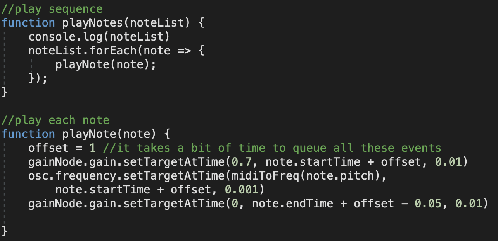

This pitch-set theory automated composer generates both pitch and duration, using the inputted pitch set class.
We can visualize the inputted pitch set class as directed lines connecting the vertices of a 12-sided polygon:
In short, the program takes this graph and performs several rotations, flips, reversals, and/or offsets to generate a sequence of notes.
In more detail:
The first thing the program does is decide how many times to operate
on the original input. The first part is deciding how many times to
“map” or “offset” the PSC:
This maps the PSC onto a range of specific notes (encoded using MIDI convention). The program chooses a random number of “maps” between 1-5, and also chooses a random offset for each map between MIDI keys 50-79, to keep the frequencies in a “comfortable” range.
The next part is deciding how many iterations of operations to perform, per mapping. The program chooses a random number of iterations between 2-8 for each mapping.
Then, the program loops through each mapping, and for each iteration of each mapping, it performs a random set of operations on the original PSC. There are three possible operations: transpose, inversion, and retrograde, which I decided to implement in that order. The program picks a random number of transpositions between 1 and 11, and it randomly picks whether or not to invert or retrograde.
The transposition operation is very simple and just uses the modulo operation, and can be visualized as a rotation of the original lines:
The inversion operation reflects the graph down the middle, which I implemented by taking 12-[original value].
Finally, the retrograde operation just reverses the order.
These operations can easily be concatenated - for example, the following diagrams illustrate t(2)ir[0 4 7]:
The program then takes the operated PSC and applies the mapping offset:
Those mapped MIDI keys are then added to the sequence of notes.
The duration of each note is also derived from the operated PSC, simply by multiplying (operatedPSCvalue + 1) by 0.05 seconds. This is implemented when adding notes to the sequence:
And then the program moves on to the next iteration, until all iterations of all mappings are complete.
Finally, to play sound, the program uses the scheduling system from the magenta demo code and plays a simple sine wave oscillator.
